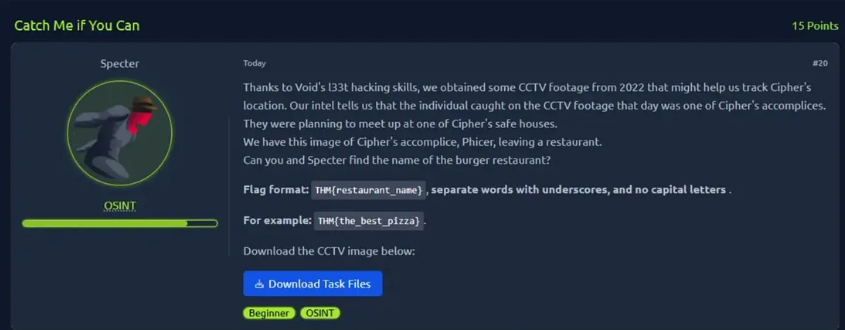
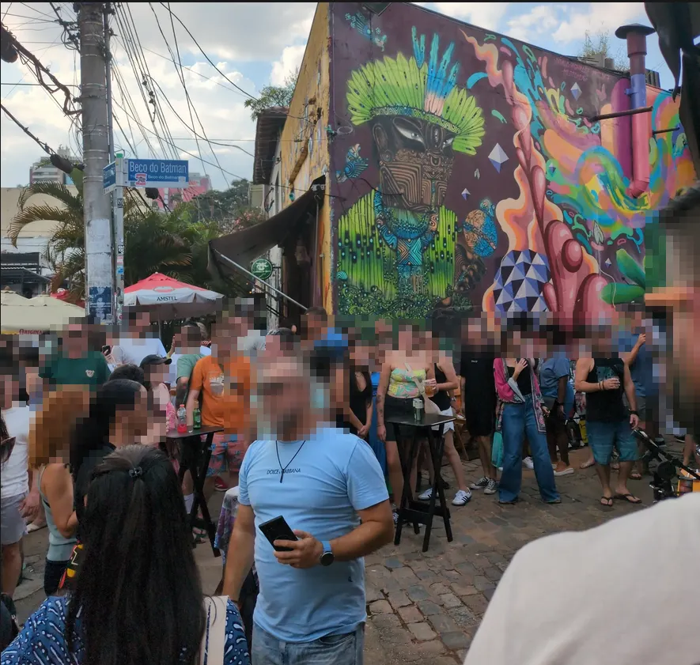
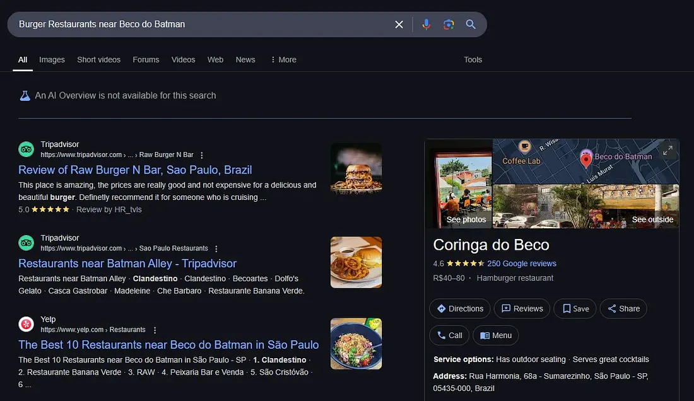
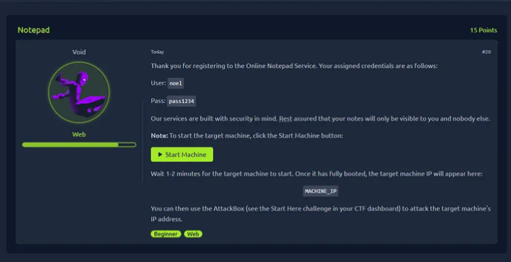
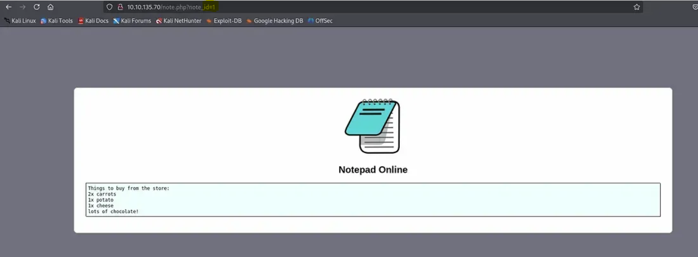
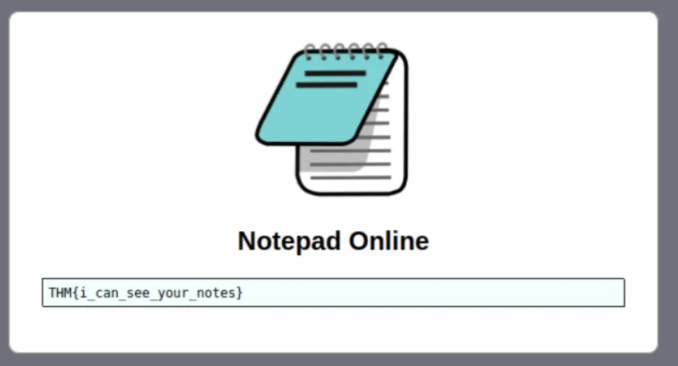
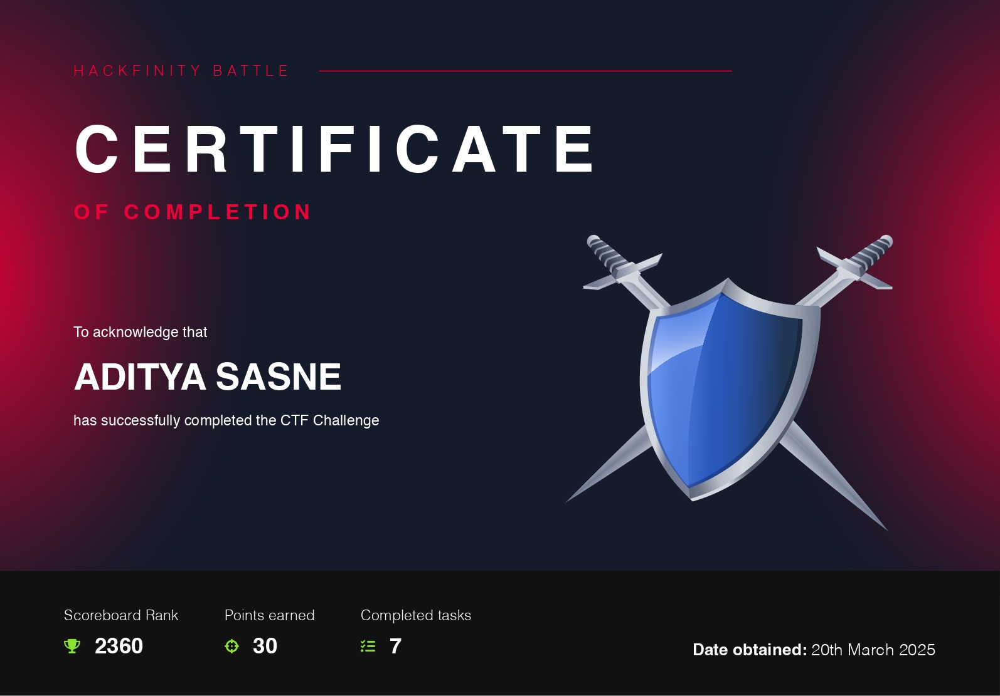

TryHackMe Hackfinity Battle 2025 CTF
Hey readers this is a writeup of my first ctf everpalyed Hackfinity Battle 2025.
Lets start
OSINT
Task 6: Catch Me if you can

An image was given, by using google image search we found out the location of the image. The hint is we have to find out burger restaurant near the image location.
Using image I found out the location of the image is Beco do Batman in São Paulo, Brazil
Now by search for burger restaurants near Beco do Batman. I find out the restaurant name "Coringa do Beco"
Flag : THM{coringa_do_beco}
Task 9: Notepad Online
We are given a notepad online and we have to find the flag.
login to the notepad with the given credentials.
By observing the url it seems like there might be IDOR vulnerability. Let's explore by changing the note_id parameter from 1 to 0
GG we get the flag THM{i_can_see_your_notes}
This was my first ctf and I enjoyed it a lot. I learned a lot of new things and I'm looking forward to more ctf's.
For this ctf I scored 30 points each task was 15 points. The total CTF challenge score was about 2200 something.
Here's my cert attached to it.
Thank you for reading this writeup. I hope you enjoyed it.